Using DeepSeek in Hermes Agent and GitHub Copilot#
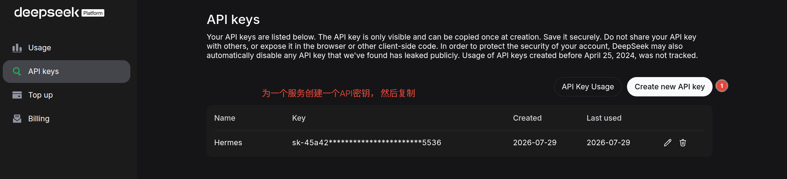
Fig. 1 Create your API key on the DeepSeek Platform dashboard. Go to the API Keys page, click “Create new API key”, give it a name (e.g. “Hermes” or “Copilot”), and save the key immediately — it is only shown once.#
If you have a DeepSeek API key, you can use it in two places: Hermes Agent for your daily AI assistant tasks, and GitHub Copilot in VS Code to help you code. This guide walks through both setups step by step.
What you need before starting:
A DeepSeek Platform account with API access
Hermes Agent installed on your machine
VS Code with the GitHub Copilot extension
Setting up DeepSeek in Hermes Agent#
Hermes Agent is an open-source AI assistant developed by Nous Research. It can connect to various LLM providers, and DeepSeek is one of them. Once configured, you can use DeepSeek’s models directly in your Hermes chat interface.
Step 1: Add DeepSeek as a provider#
By default, Hermes does not come with DeepSeek pre-configured. You need to add it manually.
Open Hermes Agent, click the model selector at the bottom of the chat interface, then click “Edit Models…”.
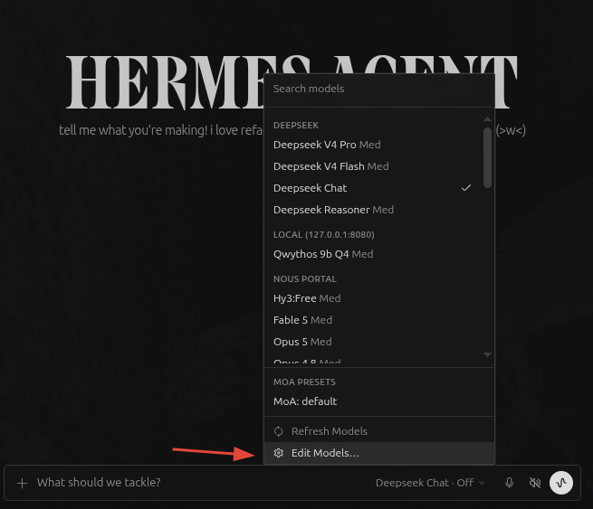
Fig. 2 The model selection dropdown in Hermes Agent. If you do not see DeepSeek models in the list yet, click “Edit Models…” (orange arrow) to open the provider settings.#
In the Models settings page, click “Add provider…” at the bottom.
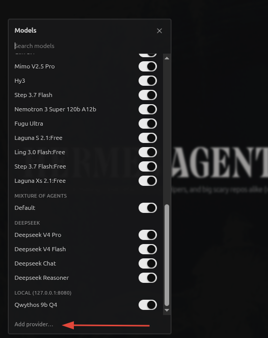
Fig. 3 The Models settings window. Click “Add provider…” (red arrow) to configure the DeepSeek API key. If DeepSeek models are already listed here, just make sure their toggles are switched on.#
Step 2: Paste your DeepSeek API key#
In the Providers settings, go to Accounts → API keys. You will see a list of supported providers. Select DeepSeek and paste your API key into the input field.
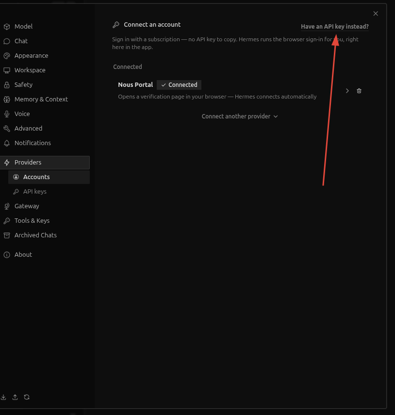
Fig. 4 The Providers > Accounts page. If you have an API key ready, click “Have an API key instead?” (red arrow) to switch from account login to key-based setup.#
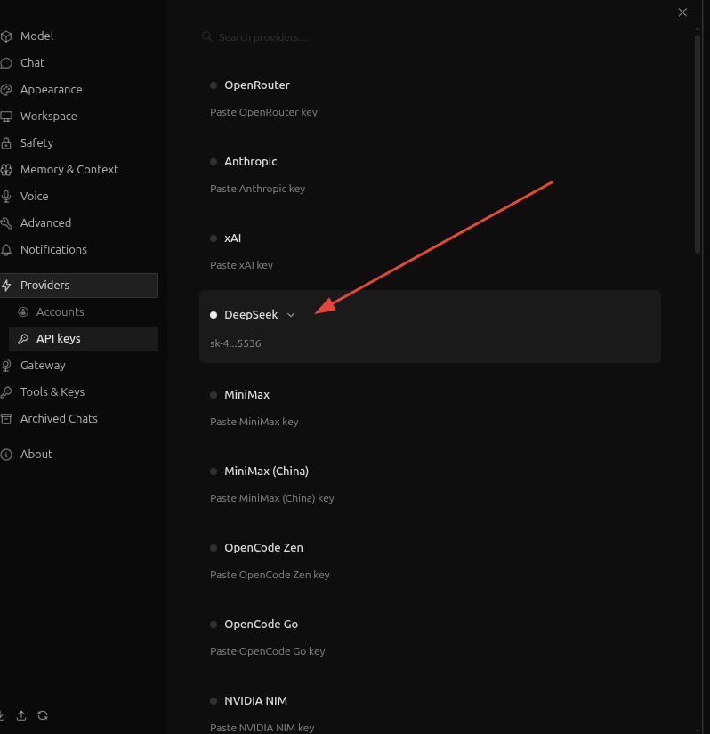
Fig. 5 In the API keys section, select DeepSeek from the list and paste your key. The key will be masked for security once saved.#
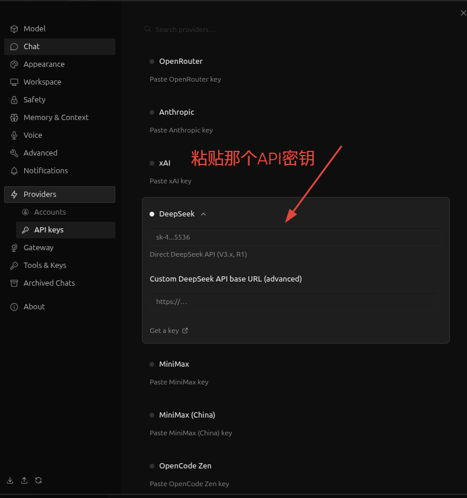
Fig. 6 After pasting the API key, you can optionally configure a custom API base URL if you are using a proxy or alternative endpoint. For most users, the default URL works fine.#
Step 3: Turn on inference#
Go back to the chat interface. At the bottom, click the model selector. You should now see DeepSeek Chat in the model list. Select it, then toggle the switch from “Off” to “On” — this controls whether inference (the actual model reasoning) is active, not whether the model is installed. When it shows “Deepseek Chat · On”, you are ready to chat.
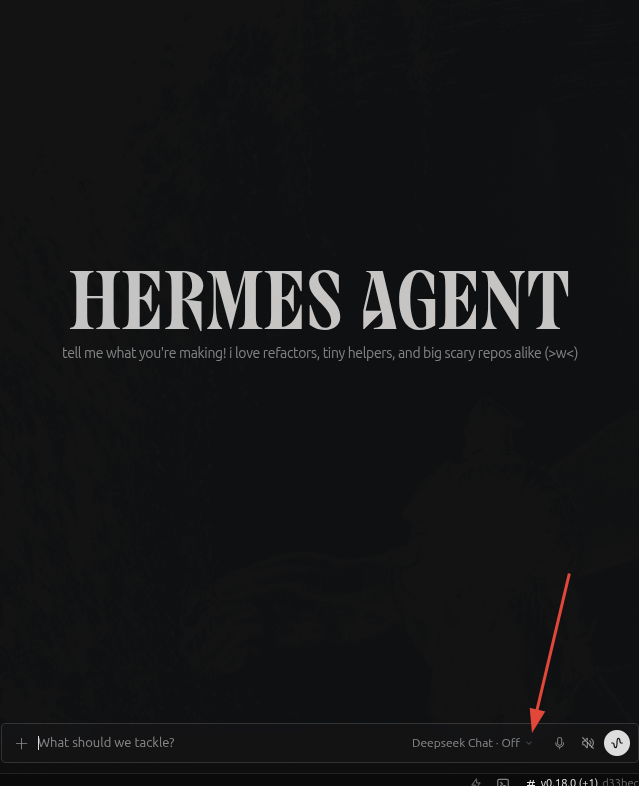
Fig. 7 The model selector shows “Deepseek Chat · Off” even after the provider is configured. Toggle it to On to enable inference — this switch controls whether the model is actively processing, not whether it is installed.#
Setting up DeepSeek in GitHub Copilot#
GitHub Copilot in VS Code has three modes:
Ask — ask a question about your code, like a documentation lookup
Plan — describe what you want to build, and Copilot drafts a step-by-step plan
Agent — give it a goal, and it actively edits files, runs terminal commands, and iterates on the code until the task is done
Using DeepSeek models with Copilot gives you access to DeepSeek’s strong reasoning capabilities in all three modes, which can be especially helpful for complex coding tasks where the Agent mode shines.
Step 1: Install the extension#
Open VS Code, go to the Extensions view (Ctrl+Shift+X), search for DeepSeek V4 for Copilot Chat by Vizards, and install it.
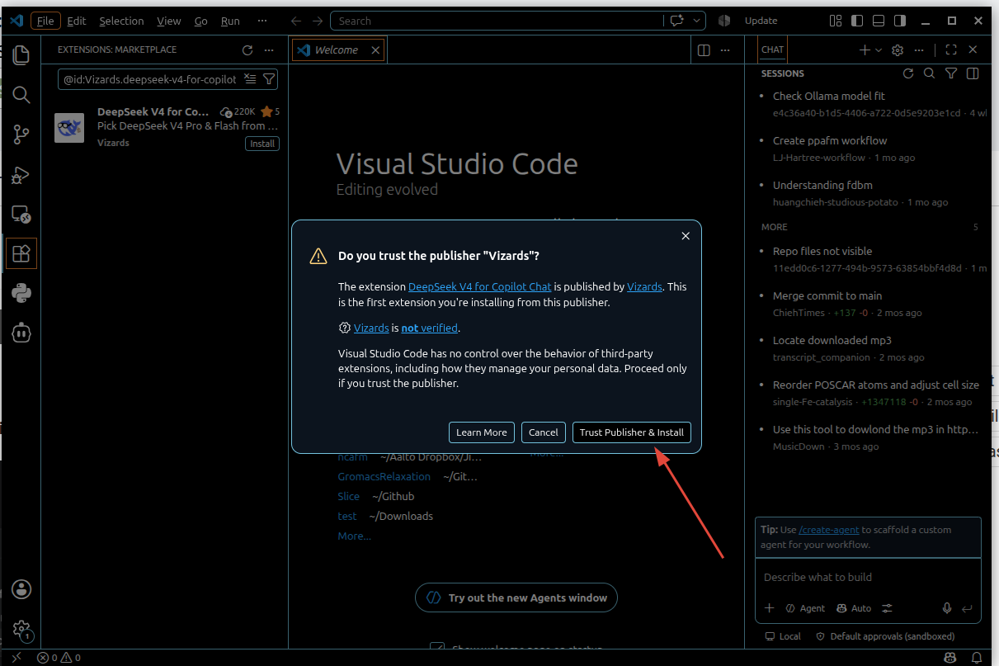
Fig. 8 Search for “DeepSeek V4 for Copilot Chat” in the VS Code Extensions Marketplace. The extension has 220K+ downloads and a 5-star rating. Click “Install” and then “Trust Publisher & Install” to confirm.#
Step 2: Create a dedicated API key for Copilot#
Go back to the DeepSeek Platform API Keys page and create a new key named “Copilot”. This way you can track usage separately from your Hermes key.
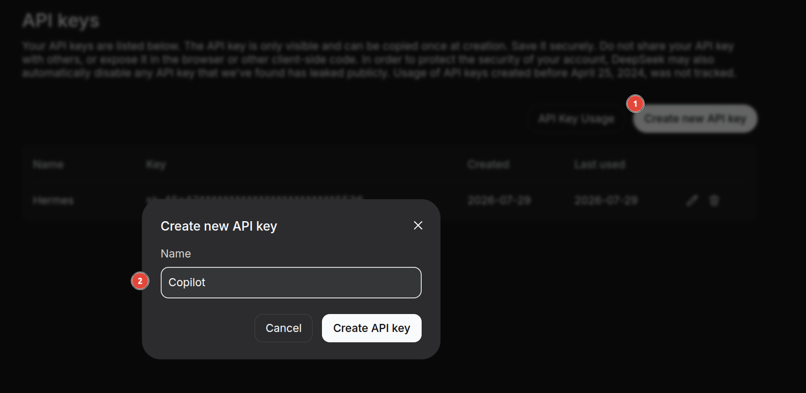
Fig. 9 Create a separate API key named “Copilot” on the DeepSeek Platform — this keeps usage tracking clean for different integrations.#
Why separate keys? Hermes Agent and GitHub Copilot serve very different purposes — one is a general assistant, the other is a coding tool. By using a different API key for each, you can see exactly how much you spend on each service in the DeepSeek usage dashboard. For example, this article alone (written with the help of Hermes Agent) cost about ¥0.13 — that is less than ¥0.14 for a full tutorial with over a dozen screenshots and multiple revisions.
Step 3: Enter the API key in VS Code#
The extension will open a setup guide. Click “Set API Key” and paste your DeepSeek API key.
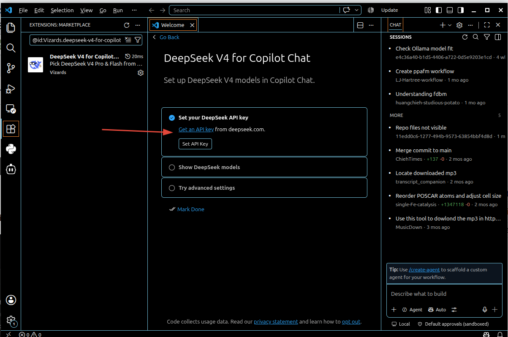
Fig. 10 The DeepSeek V4 extension setup page in VS Code. Click “Set API Key” (red arrow) to enter your key.#
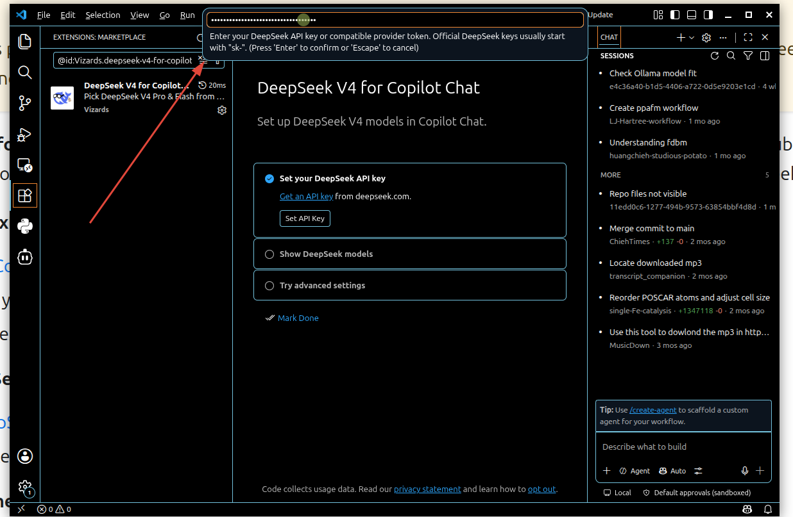
Fig. 11 A text input appears at the top of the VS Code window. Paste your sk-... DeepSeek API key and press Enter.#
Step 4: Select the model#
Once the key is saved, open the Copilot Chat panel and choose your preferred DeepSeek model — DeepSeek V4 Flash is a good balance of speed and quality, while DeepSeek V4 Pro offers the best reasoning for complex tasks.
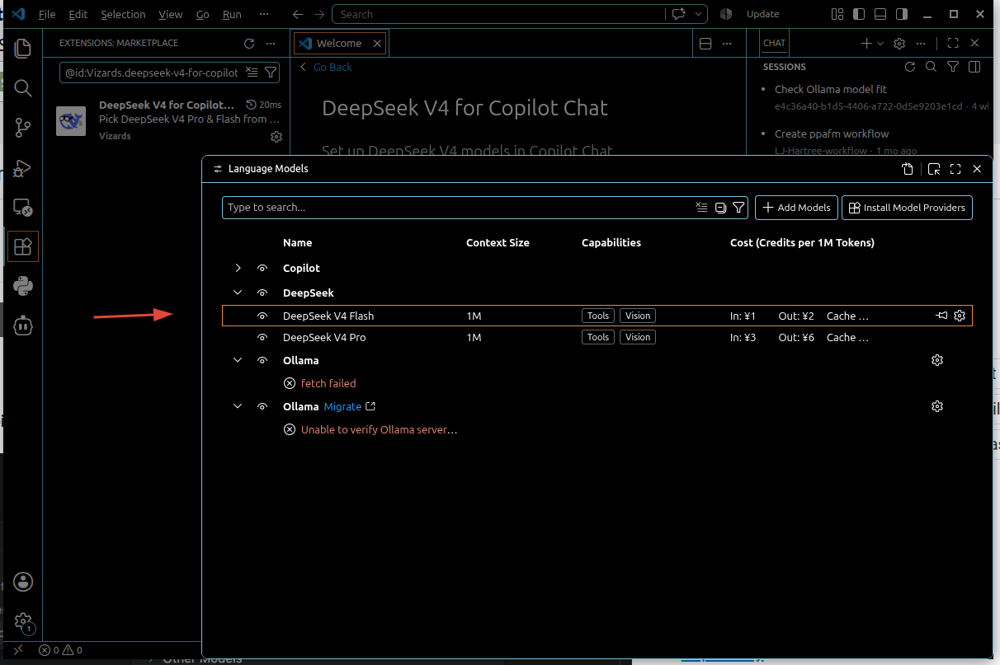
Fig. 12 In the Language Models configuration, choose between DeepSeek V4 Flash (faster, cheaper) and V4 Pro (stronger reasoning). Both support Tools and Vision capabilities with a 1M context window.#
Now you can use DeepSeek-powered Copilot in all three modes. Try Agent mode — tell it something like “Create a Python script that downloads and plots temperature data from this API” and watch it work through the problem, writing code and iterating on the solution automatically.
Summary#
Step |
Hermes Agent |
GitHub Copilot |
|---|---|---|
Get API key |
Create on DeepSeek Platform |
Create on DeepSeek Platform |
Install |
Built-in (just configure) |
Install VS Code extension |
Configure |
Providers → API keys → DeepSeek |
Extension setup → Set API Key |
Start using |
Chat with DeepSeek model |
Copilot Chat in Ask/Plan/Agent mode |
That is all there is to it. With DeepSeek API keys, you can power both your daily AI assistant (Hermes Agent) and your coding assistant (VS Code Copilot) with separate keys for each — making it easy to track your usage. The setup takes about five minutes and gives you access to DeepSeek’s capable models in two very different contexts.
If you use separate keys (as suggested above), you can check exactly how much each service costs on the DeepSeek Platform usage page. For reference, writing this entire article with Hermes Agent cost about ¥0.13.
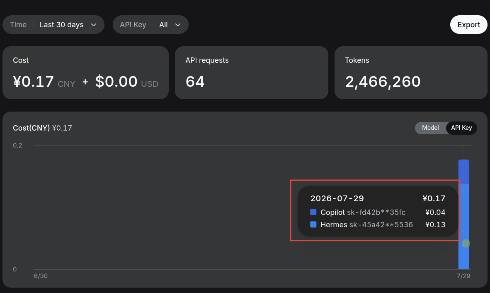
Fig. 13 The DeepSeek usage dashboard breaks down cost by API key. Here you can see the “Copilot” key cost ¥0.04 and the “Hermes” key cost ¥0.13 in the last 30 days — useful for understanding your usage patterns.#
If you run into any issues or have questions, feel free to leave a comment below.